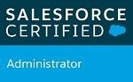

- 


SFDC Architect/ Manager: 11+ years of experience in IT Industry and into the Salesforce CRM implementations & customizations primarily in verticals like Banking, Mobility, HR, Material Handling, Manufacturing, Education & Telecom etc. Presently working for First Republic Bank through Mphasis Ltd., as an SFDC Architect/ Manager.
• Experienced in all project phases with Waterfall & Agile (Scrum Framework & tools like JIRA, Confluence etc.). • Involved in Pre-Sales activities for huge projects includes T-shirt sizing, BRDs, Resource loading, estimates etc. • Having sound knowledge on different clouds like Financial Service Cloud, Sales, Service, Marketing cloud etc. • Client collaboration involving into business & technical discussions • Requirement analysis and addressing any gaps in requirements • Providing solutions, Feasibility analysis, Effort estimations under SCRUM framework • Defining and enforcing best practices and guidelines & conducting code reviews to ensure quality • Work closely with the Dev team to get the work done on time • Reusable & maintainable design patterns frameworks with functional & technical documentation • Identify and suggest areas of improvement in the existing systems • Deployment life cycle using CI/CD, GIT, Jenkins, AutoRABIT and IDEs like Eclipse, VS Code, IntelliJ etc. • Data management & migration design using Dataloader, dataloader.io and ETL tools like TALEND • Experienced in org analysis, data migration, data modeling, design, solutions, configuration, customization, security implementation, Apex, VF & LWC development and maintenance. • Building out business processes using workflows, approvals process, process builder, flows. Managing the user interface using page layouts & record types; Configured reports & dashboards • Experienced on ApexClasses, Apex Triggers, Asynchronous Apex like @future, Batch Apex, Queueable Apex, Visualforce Pages, Controllers, Visualforce Components, LWC • Implemented complex security models using OWD, Profile, Permissionsets, FLS, Roles etc. • Tools: Jitter Bit, Conga Composer, Skuid, DocuSign, Talend, AutoRABIT, Postman etc. • Having good knowledge on HTML, CSS, JavaScript, Ajax, vue.js, Angular JS etc. • Certified Professional SCRUM master, experienced in setting up SCRUM practice
• B. Tech in Electronics & Communication Engineering from SK University, A.P, India • Salesforce Certified Integration Architecture Design • Salesforce Certified Platform Developer II • Salesforce Certified Platform Developer I • Salesforce Certified Platform App Builder • Salesforce.com Certified Administrator • PSM 1(Professional SCRUM Master 1)
Mphasis Limited, India, Architect Dec 2021 to present
First Republic Bank, USA
First Republic Bank is an American full-service bank and a wealth management company offering personal banking, business banking, trust and wealth management services. The bank specialized in delivering personalized relationship-based services in USA. Major responsibilities with FRB is to work as an Architect and to take care of Financial Service Cloud in a complex environment with different connected systems and lot of tools like nCino and to deliver a robust deployment mechanism using AutoRABBIT and to offer robust end-to-end solutions with the best practices and handled huge dev team for 3 different projects (Business Banking, Lending, Wealth Management) with multiple SCRUM teams. Designed, developed and managed complex integration environments with multiple connected systems and a Master Data Management System.
Delivery Hero SE, Berlin, Germany, Sr SFDC Developer Sep 2019 to Apr 2020
Delivery Hero SE is a European multinational online food delivery company based in Berlin, Germany, operates in 50+ countries across the globe and partners with more than 500,000+ restaurants.
Major responsibilities with Delivery Hero are to listen and understand the business and provide robust working SFDC solutions for the complex requirements and implementation of the same.
Provided migration solution of features & Data from Food panda Salesforce org to Delivery Hero org. Used Talend for Data migration of large chunks of data from source org to destination including files. Migrated Formstack solution to build quick websites to get the orders flow into Salesforce.
Sixt SE, Pullach, Germany, Sr. Manager Apr 2016 to Aug 2019
SIXT SE is one of the largest European car rental companies founded in Germany in 1912 and an international mobility provider
◦ Responsible for understanding the requirement, architecting the robust solutions with Apex, Visualforce, Integrations, Data migrations, Security Implementation etc. of a complete HR (People Management) application built on the force.com platform which is used to manage the candidate recruitment process through the Sixt.jobs portal and integrated the application with major job portals across Europe like Monster, indeed, Stepstones etc. The tool offers the process of candidate application, Interview process, feedback from the interviewers, Salary negotiation, Contract creation, performance review, Employee exit process etc.
◦ Responsible for the redesign & migration of the entire Salesforce.com Sales application to move to the force.com platform and replacing of salesforce licenses to the cost-effective solution with platform licenses
◦ Responsible or digitalization of the existing Sales application which includes the implementation of the B- 2-B portal, electronic signature for signing the contract digitally using the CONGA composer & DocuSign, along with Lead Management, Account management and custom Opportunity management etc.
Cognizant Technology Solutions, India, Senior Associate Mar 2015 to Mar 2016
◦ Houghton Miffin Harcourt, USA
Responsible for providing solutions and Salesforce customization, configuration, development (Apex, VF, Integrations) and security & sharing implementation for Houghton Mifflin Harcourt, an educational and trade publisher in the United States. Headquartered in Boston's Back Bay, it publishes textbooks, instructional technology materials, assessments, reference works, and fiction and non-fiction for both young readers and adults.
Moldtek Technologies Pvt. Ltd, India, Software Engineer Sep 2013 to Feb 2015
◦ USM-MONO, Swis
Responsible for Salesforce customization, configuration, development (Apex, VF, Integrations, SKUID), Security & Sharing implementation and Data migration etc. for USM who was known as a pre-eminent producer of iron works and window fittings. They are mainly into furniture business providing pioneering furniture product known today as USM Haller Systems.
◦ SKM Charity Team, UK
Responsible for Salesforce customization, configuration, development (Apex, VF, Integrations), Security & Sharing implementation and Data migration, force.com sites etc. for the Kent and Medway Charity Team was found in 2001 with the aim of supporting and promoting walking bus and green travel initiatives at primary schools. At the start the organization was called the Kent and Medway Walking Bus Group. Today green travel to school and children’s health and wellbeing is still at the heart of the charity’s activities but now it has a widened remit delivering other services to support schools – and also to provide support to PTA groups and charities to support their fundraising.
Atos India Pvt. Ltd, India, System Analyst Feb 2013 to Sep 2013
◦ Nokia Siemens Networks, Finland
Responsible for Salesforce customization, configuration, development (Apex, VF, Integrations) and security & sharing implementation, Reports & Dashboards etc. and testing the salesforce application for Nokia Siemens Networks who were having various legacy applications which are migrated to Cloud computing so that it will help the business spread across the globe. Salesforce.com was the choice of technology as it is one of the prominent OnDemand cloud technology available.